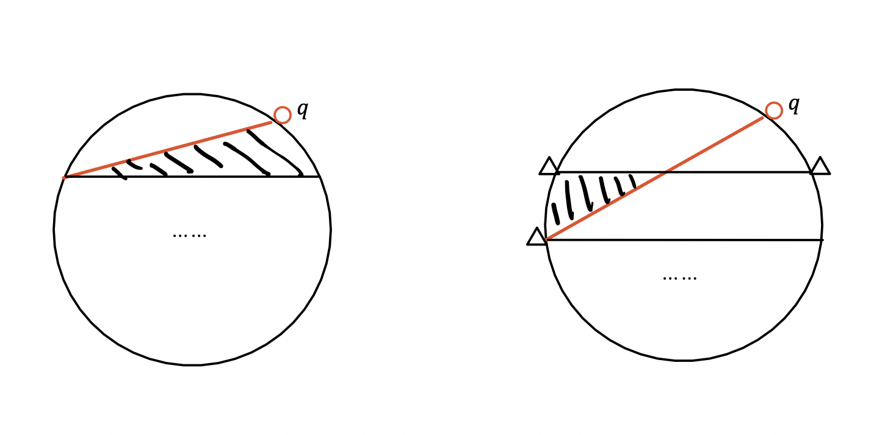
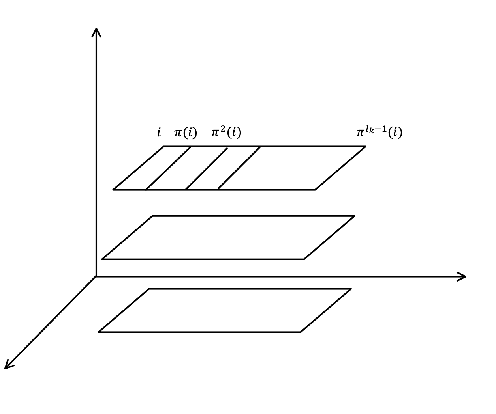

科斯特利金的代数学书写的挺不错的
有一些现代的问题也值得研究
数学归纳法原理
从美国数学月刊的一个征解问题说起
美国数学月刊，1977，V.84, No.6
给定圆周上任意 n 个点，确定 (2n)条弦
划分圆内的区域数 Rn，任意三条弦在圆内不相交
Rn=1+(n2)+(n4)
根据数学归纳法，n=1 显然成立，如果 n=k 时成立，那么只要证明
Rn+1−Rn=n+(n3)
而这个式子是成立的，证明如下
i) 加入的新点 q，与 原来 ∀n 构成弦
这个弦将原来的区域划分出了一块新的区域 S
如阴影部分所示, {S∈D1}∪{S∈D2}∪⋯
这样的 S 有(n1) 个，所以划分区域增加
Δ1=(n1)
ii) 加入新点 q，构成相交弦，在圆内产生交点
从 n 中任取 3 个点, {a1,a2,a3}, 不失一般性
假设(q,a3) 与 (a1,a2) 相交，交点位于圆内
增加的区域如下
Δ2=(n3)

证毕
practice1
S(n)+sin(n+1)φ=sin2φsin2nφsin2(n+1)φ+sin2φsin(n+1)φsin2φ ⇒2sin2(n+1)φcos2(n+1)φsin2φ+sin2nφsin2(n+1)φ ⇒sin2(n+1)φ(2cos2(n+1)φsin2φ+2sinnφ) ⇒cos2nφsinφ−2sin2nφsin22φ+2sinnφ =sin(2nφ+φ)
practice2
sin2nφcos2(n+1)φ+cos(n+1)φsin2φ ⇒2cos22(n+1)φsin2φ−sin2φ+sin2nφcos2(n+1)φ ⇒cos2(n+1)φ(2cos2(n+1)φsin2φ+sin2nφ)−sin2φ bracket⇒2(cos2nφcos2φ−sin2nφsin2φ)sin2φ+sin2nφ =sin(2nφ+φ) ⇒sin(2(n+1)φ+2φ)cos2(n+1)φ−sin2φ ⇒2sin2(n+1)φcos2(n+1)φcos2φ+2cos22(n+1)φsin2φ−2sin2φ ⇒2sinφ/2sin(n+1)φcos2φ+sin2φcos(n+1)φ−sin2φ ⇒2sin2φsin((n+1)φ+2φ)−sin2φ=sin2φsin2(n+1)φcos2(n+2)φ
置换

Ω={1,2,…,n}, 通过不相交的类分解，可以有
Ω=Ω1∪Ω2…∪Ωp 称为轨道
Ωk={i,π(i),π2(i),…πlk−1(i)}
lk⩽q=Card⟨π⟩,πlk(i)=i πk=(i,π(i),π2(i),…,πlk−1(i))=(iπ(i)π(i)π2(i)⋯⋯πk−2(i)πk−1(i)) ∀j∈Ωk,π(j)=πk(j)
置换的唯一分解
π=π1π2…πm,lk>1,1⩽k⩽m
如果存在另一种分解，不妨设为 π=α1α2…αr
∃πs,αt,πs(i)=i,αt(i)=i
πs(i)=π(i)=αt(i), if we have πsk(i)=πk(i)=αtk(i) ⇒ππSk(i)=πk+1(i)=παtk(i),根据交换性⇒πskπ(i)=πk+1(i)=αtkπ(i) πsk+1(i)=πk+1(i)=αtk+1(i),∀k={0,1,2…} let k=0,πs=αt
置换的符号是唯一的
证明的结论等价于置换的两个分解
π=τ1τ2…τkπ=τ1′τ2′…τk′′k+k′是一个偶数
i)
(τs′)2=e,τ1τ2…τkτk′⋯⋯′τ2′τ1′=e lete=σ1σ2⋯σm−1σm,m>0 只要证明，将m个因子消减成m−2个
ii)
e=σ1σ2…σp−1σpσp+1…σm σp=(s,t),s∈/{σp+1,…σm} 1)σp−1=(st),σp−1σp=(st)(st)=e⇒ m−2 对换分解 2)σp−1=(s,r),r=s,t ⇒σp−1σp=(s,r)(s,t)=(s,t)(r,t) 3)σp−1=(t,r),r=s,t ⇒σp−1σp=(t,r)(s,t)=(s,t)(t,r) 4)σp−1=(q,r),{q,r}∩{s,t}=ϕ σp−1σp=(q,r)(s,t)=(s,t)(q,r)
iii)
可以使用这样的操作，把 (s,t) 不断提前
e=σ1′σ2′…σm′,σ1′=(s,t′),s∈/{σ2′,σ3′,…σm′} k>1,σk′(s)=s,s=e(s)=σ1′(s)=t′=s
 微信
微信 支付宝
支付宝